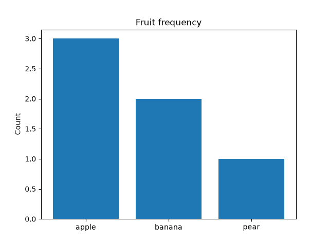
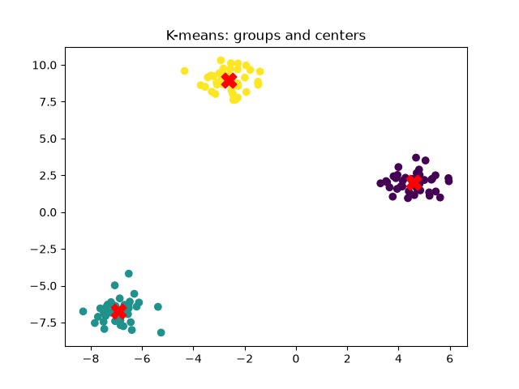
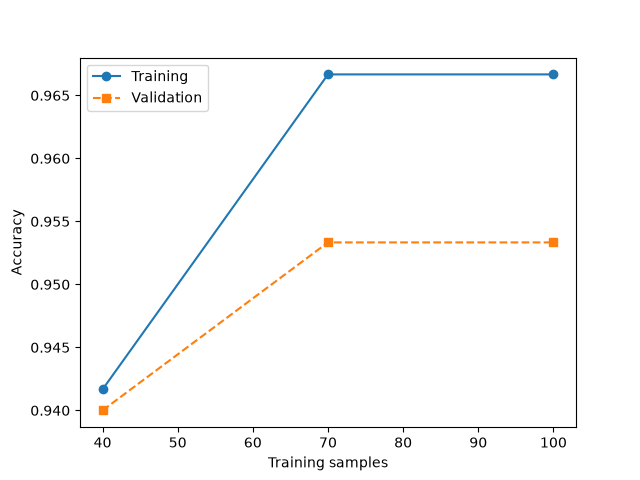

인공지능 파이썬 실무
인공지능 파이썬 실무예측과 평가를 눈으로 실험하기
학습용 수학 모형입니다. 아래 조작과 별도로 실습실의 Python 코드를 실행할 수 있습니다.
직선의 기울기와 오차
양성으로 예측하는 기준 바꾸기
고정 확률 [0.9, 0.8, 0.6, 0.4, 0.3, 0.1]
실제 정답 [1, 0, 1, 1, 0, 0]
대단원 Ⅲ. 파이썬과 머신러닝 교과서 60–131쪽
중단원 01. 머신러닝 개요 · 62–84쪽
소단원 01. 머신러닝이란? · 63–67쪽
이 웹 주제의 연계 범위: 62–67쪽
웹 학습 주제 01
AI·머신러닝·딥러닝의 관계
규칙을 직접 쓰는 것과 데이터에서 규칙을 배우는 것은 어떻게 다를까요?
AI·머신러닝·딥러닝의 관계 · 한눈에 보기
| 접근 | 규칙의 출처 | 예 |
|---|---|---|
| 규칙 기반 | 사람이 조건 작성 | 비밀번호 길이 검사 |
| 머신러닝 | 데이터와 학습 알고리즘 | 스팸 분류 |
| 딥러닝 | 다층 신경망의 학습 | 이미지 특징 학습 |
개념 더 읽기
인공지능은 지능적인 문제 해결 기술의 넓은 범위입니다. 머신러닝은 데이터에서 패턴을 학습하는 접근이며, 딥러닝은 여러 층의 신경망을 사용하는 머신러닝의 한 종류입니다. 모든 AI가 머신러닝인 것은 아닙니다.
초기의 규칙 중심 연구는 지식 입력과 계산 자원의 한계를 겪었습니다. 이후 데이터·계산 장치·학습 알고리즘의 발전이 함께 영향을 주었습니다. 1956년 다트머스 워크숍, 1997년 딥 블루의 체스 승리, 2012년 ImageNet의 딥러닝 성과는 서로 다른 접근의 발전 사례입니다. 딥 블루를 현대 딥러닝 모델과 같은 것으로 보지 마세요.
직접 해 보세요
- 주변의 AI 서비스 하나에서 입력과 출력을 찾아 설명하세요.
대단원 Ⅲ. 파이썬과 머신러닝 교과서 60–131쪽
중단원 01. 머신러닝 개요 · 62–84쪽
소단원 02. 머신러닝의 필요성과 활용 · 68–70쪽
이 웹 주제의 연계 범위: 68–70쪽
웹 학습 주제 02
머신러닝이 필요한 문제와 활용
정확한 규칙을 쓰기 어려운 문제를 찾아보세요.
머신러닝이 필요한 문제와 활용 · 한눈에 보기
- 1문제 찾기
- 2입력 데이터 정하기
- 3예측할 출력 정하기
- 4오류가 미칠 영향 점검
| 서비스 | 입력 | 예측 |
|---|---|---|
| 추천 | 이용 기록·항목 특성 | 선호 가능성 |
| 제조 검사 | 제품 이미지 | 정상/결함 |
| 대출량 예상 | 과거 대출·요일 | 예상 권수 |
개념 더 읽기
추천, 이미지 분류, 음성 처리처럼 복잡한 패턴이 있는 문제에서 머신러닝을 활용합니다. 규칙이 명확한 사칙연산이나 간단한 유효성 검사에는 일반 프로그램이 더 간단할 수 있습니다.
학습 데이터가 현실을 충분히 대표하지 않으면 특정 조건에서 오류가 늘어납니다. 예측을 사실로 단정하지 말고, 데이터의 범위·오류 비용·사람의 확인 절차를 함께 설명하세요.
직접 해 보세요
- 학교 도서 대출량을 예측한다면 어떤 데이터를 모을지 표로 적으세요.
대단원 Ⅲ. 파이썬과 머신러닝 교과서 60–131쪽
중단원 01. 머신러닝 개요 · 62–84쪽
소단원 03. 머신러닝 문제 해결 과정 · 71–75쪽
중단원 02. 머신러닝 라이브러리 활용 · 85–128쪽
소단원 02. 데이터 준비와 전처리 · 90–102쪽
이 웹 주제의 연계 범위: 71–75, 101–102쪽
웹 학습 주제 03
문제 해결 과정과 데이터 분할
모델을 만들기 전에 성공 기준을 정하세요.
문제 해결 과정과 데이터 분할 · 한눈에 보기
- 1문제·성공 기준
- 2수집·탐색
- 3훈련/테스트 분할
- 4전처리·학습·검증
- 5최종 평가·해석
| 분할 | 역할 | 금지할 일 |
|---|---|---|
| 훈련 | 전처리 값·모델 학습 | 정답을 입력 특성에 포함 |
| 검증 | 모델·설정 선택 | 최종 테스트로 반복 선택 |
| 테스트 | 선택 완료 후 최종 확인 | fit / fit_transform 호출 |
개념 더 읽기
문제 정의 → 수집·탐색 → 전처리 → 모델 선택 → 학습·평가 → 해석·응용으로 진행합니다. 실제 프로젝트에서는 결과를 보고 앞 단계로 돌아가 수정하기도 합니다.
평가용 데이터는 먼저 분리해 둡니다. 평균·스케일·범주 목록처럼 데이터에서 배우는 전처리 값도 훈련 부분에서만 구합니다. 모델 후보는 검증 데이터나 교차 검증으로 비교하고, 최종 테스트는 선택을 마친 뒤 사용합니다.
직접 해 보세요
- 도서 대출 예측의 성공 기준을 평균 오차로 표현해 보세요.
이 설명에 이어서 실습하기
예제를 선택하면 바로 아래에서 코드를 수정하고 실행할 수 있습니다. 작성한 코드는 예제별로 저장됩니다.
CODE WORKSPACE
코드를 바꾸는 실습실
실행 엔진은 처음 실행할 때 내려받습니다. 패키지 크기에 따라 최초 준비에 최대 3분이 걸릴 수 있으며 네트워크가 필요합니다. 실행은 최대 30초이며 중지 후 다시 실행할 수 있습니다.
실행할 예제를 선택하세요.
대단원 Ⅲ. 파이썬과 머신러닝 교과서 60–131쪽
중단원 01. 머신러닝 개요 · 62–84쪽
소단원 04. 머신러닝의 주요 용어 · 76–78쪽
이 웹 주제의 연계 범위: 76–78쪽
웹 학습 주제 04
특성·레이블·모델·하이퍼파라미터
표의 어느 열을 X로, 어느 열을 y로 사용할까요?
특성·레이블·모델·하이퍼파라미터 · 한눈에 보기
- 1행샘플 1개
- 2입력 열 X특성 여러 개
- 3정답 열 y레이블
- 4fit → predict학습 후 예측
| 기호 | 도서 예 | 형태 |
|---|---|---|
| X | 요일·최근 대출 수 | (샘플 수, 특성 수) |
| y | 다음 날 대출 수 | (샘플 수,) |
| 하이퍼파라미터 | 트리의 최대 깊이 | 학습 전에 선택 |
개념 더 읽기
데이터 세트의 한 행은 보통 한 관측입니다. X는 예측 시점에 알 수 있는 특성의 표이며 y는 예측할 정답입니다. 샘플 수와 특성 수를 확인하고 같은 행의 X와 y가 대응하는지 검사합니다.
모델은 학습한 예측 규칙입니다. 가중치 같은 파라미터는 학습 과정에서 정해지고, k-NN의 k 같은 하이퍼파라미터는 학습 전에 설정합니다. 훈련 성능만 좋고 검증 성능이 낮으면 과대 적합, 둘 다 낮으면 과소 적합을 의심합니다.
직접 해 보세요
- 미래 대출 수를 특성에 넣으면 왜 잘못된 평가가 되는지 설명하세요.
대단원 Ⅲ. 파이썬과 머신러닝 교과서 60–131쪽
중단원 01. 머신러닝 개요 · 62–84쪽
소단원 05. 머신러닝 학습 방법의 종류 · 79–82쪽
이 웹 주제의 연계 범위: 79–84쪽
웹 학습 주제 05
지도·비지도·강화 학습
정답을 배우나요, 구조를 찾나요, 행동의 보상을 배우나요?
지도·비지도·강화 학습 · 한눈에 보기
- 1정답 있음지도 학습
- 2정답 없음비지도 학습
- 3상태·행동·보상강화 학습
| 유형 | 목표 | 예 |
|---|---|---|
| 분류 | 범주 예측 | 스팸 여부 |
| 회귀 | 수치 예측 | 내일 기온 |
| 군집 | 유사한 데이터 묶기 | 고객 그룹 |
| 강화 | 행동 전략 학습 | 미로에서 탈출 |
개념 더 읽기
지도 학습은 입력과 정답의 관계를 학습합니다. 범주를 예측하면 분류, 연속적인 수치를 예측하면 회귀입니다. 비지도 학습은 정답 없이 군집이나 낮은 차원의 구조를 찾습니다.
강화 학습에서는 에이전트가 상태를 보고 행동하며 환경에서 보상을 받습니다. 정책은 행동 선택 전략이고 장기 누적 보상을 높이는 방향으로 배웁니다. Q-learning은 여러 강화 학습 알고리즘 중 하나입니다.
직접 해 보세요
- 미로 탈출에 보상을 설계하고 반복 제자리 움직임을 막는 방법을 설명하세요.
대단원 Ⅲ. 파이썬과 머신러닝 교과서 60–131쪽
중단원 02. 머신러닝 라이브러리 활용 · 85–128쪽
소단원 01. 파이썬 머신러닝 라이브러리 소개 · 86–89쪽
이 웹 주제의 연계 범위: 85–89쪽
웹 학습 주제 06
머신러닝 라이브러리와 그래프
배열·표·모델·그래프 도구를 연결해 보세요.
머신러닝 라이브러리와 그래프 · 한눈에 보기

과일 빈도 막대그래프 · 제공 Python 예제의 실제 실행 결과 · 클릭하여 확대- 1NumPy배열
- 2pandas표 정리
- 3scikit-learn학습·평가
- 4Matplotlib / Seaborn시각화
| 확인 | 코드 | 의미 |
|---|---|---|
| 앞부분 | df.head() | 표의 실제 값 |
| 구조 | df.info() | 자료형·결측 개수 |
| 통계 | df.describe() | 수치 분포 |
| 배열 크기 | array.shape | 축별 길이 |
개념 더 읽기
NumPy는 다차원 배열과 벡터 연산, pandas는 Series·DataFrame과 표 탐색, scikit-learn은 전처리·학습·평가 도구를 제공합니다. Matplotlib은 그래프 구성, Seaborn은 표 데이터의 통계 시각화를 돕습니다.
웹에서는 NumPy·pandas·그래프와 작은 원리 실습을 실행합니다. scikit-learn 전체 파이프라인은 PC에서 실행합니다. 필요한 웹 패키지는 처음에 내려받습니다. 실행한 Python이 만든 PNG 그래프는 결과 아래에 표시됩니다. PC에서는 예제 폴더에서 requirements.txt를 설치합니다.
직접 해 보세요
- 과일 종류와 개수를 바꾸고 그래프가 바뀌는지 확인하세요.
이 설명에 이어서 실습하기
예제를 선택하면 바로 아래에서 코드를 수정하고 실행할 수 있습니다. 작성한 코드는 예제별로 저장됩니다.
대단원 Ⅲ. 파이썬과 머신러닝 교과서 60–131쪽
중단원 02. 머신러닝 라이브러리 활용 · 85–128쪽
소단원 02. 데이터 준비와 전처리 · 90–102쪽
이 웹 주제의 연계 범위: 90–100쪽
웹 학습 주제 07
결측치·이상치·스케일·범주 처리
값을 바꾼 이유와 기준을 남겨 보세요.
결측치·이상치·스케일·범주 처리 · 한눈에 보기
- 1불러오기·자료형 확인
- 2분할 후 훈련 부분 탐색
- 3결측·이상치 처리 기준
- 4수치 스케일·범주 인코딩
- 5테스트에는 transform
| 처리 | 배우는 기준 | 확인 |
|---|---|---|
| 결측 채우기 | 훈련 중앙값 등 | 누락 의미 보존 |
| 정규화 | 훈련 최소·최대 | 새 값은 범위 밖 가능 |
| 표준화 | 훈련 평균·표준편차 | 분포 모양 보장 안 함 |
| 원-핫 | 훈련 범주 목록 | 알 수 없는 범주 대응 |
개념 더 읽기
CSV는 read_csv, Excel은 read_excel로 읽습니다. 결측치는 isna로 확인한 뒤 dropna로 제거하거나 fillna·SimpleImputer로 채울 수 있습니다. 이상치는 입력 오류인지 드문 정상 관측인지 먼저 확인합니다. 임의 삭제는 데이터의 의미를 바꿀 수 있습니다.
MinMaxScaler는 훈련 범위를 기준으로 값을 조정하며 새로운 값은 0~1 범위를 벗어날 수 있습니다. StandardScaler는 훈련 평균과 표준편차로 변환하지만 정규분포를 만들어 주지는 않습니다. 범주형 값에는 get_dummies 또는 OneHotEncoder를 사용하며 새 범주 처리 기준도 정합니다.
직접 해 보세요
- 1000점이 실제 값인지 입력 실수인지 확인할 질문을 적으세요.
이 설명에 이어서 실습하기
예제를 선택하면 바로 아래에서 코드를 수정하고 실행할 수 있습니다. 작성한 코드는 예제별로 저장됩니다.
대단원 Ⅲ. 파이썬과 머신러닝 교과서 60–131쪽
중단원 02. 머신러닝 라이브러리 활용 · 85–128쪽
소단원 03. 주요 머신러닝 알고리즘 활용 · 103–111쪽
이 웹 주제의 연계 범위: 103–105쪽
웹 학습 주제 08
분류: k-NN·로지스틱·트리·SVM
이름에 회귀가 들어 있어도 범주를 예측하는 모델이 있어요.
분류: k-NN·로지스틱·트리·SVM · 한눈에 보기
- 1붓꽃 X,y
- 2분할
- 3스케일 + 분류기 fit
- 4새 X로 predict
- 5정답과 비교
| 알고리즘 | 핵심 | 조절값 예 |
|---|---|---|
| k-NN | 가까운 이웃 | n_neighbors |
| 로지스틱 | 클래스 확률 | C |
| 결정 트리 | 조건 분기 | max_depth |
| SVM | 분리 경계 | C / kernel |
개념 더 읽기
k-NN은 가까운 이웃들의 정답을 참고합니다. 로지스틱 회귀는 분류에 사용하는 모델이고, 결정 트리는 조건으로 데이터를 나누며, SVM은 범주 사이의 경계를 학습합니다.
붓꽃 예제에서 X는 꽃받침·꽃잎의 측정값이고 y는 품종입니다. stratify=y는 분할 시 클래스 비율을 고려합니다. k-NN·SVM 등은 거리나 스케일의 영향을 받으므로 전처리를 파이프라인 안에서 학습합니다.
직접 해 보세요
- k를 3과 7로 바꾸고 같은 분할에서 결과를 비교하세요.
이 설명에 이어서 실습하기
예제를 선택하면 바로 아래에서 코드를 수정하고 실행할 수 있습니다. 작성한 코드는 예제별로 저장됩니다.
대단원 Ⅲ. 파이썬과 머신러닝 교과서 60–131쪽
중단원 02. 머신러닝 라이브러리 활용 · 85–128쪽
소단원 03. 주요 머신러닝 알고리즘 활용 · 103–111쪽
중단원 02. 머신러닝 라이브러리 활용 · 85–128쪽
소단원 04. 모델 평가와 선택 · 112–126쪽
이 웹 주제의 연계 범위: 106–107, 121–123쪽
웹 학습 주제 09
회귀와 수치 오차
예측 숫자는 정답에서 얼마나 떨어져 있나요?
회귀와 수치 오차 · 한눈에 보기
- 1입력 특성
- 2가중합 + 절편
- 3예측 숫자
- 4정답과 오차 계산
| 지표 | 작을수록? | 의미 |
|---|---|---|
| MAE | 좋음 | 원래 목표값 단위 |
| MSE | 좋음 | 큰 오차를 강하게 반영 |
| R² | 클수록 좋음 | 0은 평균 기준, 음수 가능 |
개념 더 읽기
회귀는 연속적인 목표값을 예측합니다. 선형 회귀는 특성들의 가중합과 절편으로 값을 예측합니다. 예측한 값과 실제 값의 차이를 잔차라고 부릅니다.
MAE는 절대 오차 평균, MSE는 제곱 오차 평균입니다. MSE는 큰 오차에 더 큰 벌점을 줍니다. R²는 평균 예측 기준과 비교한 값으로 음수가 될 수 있습니다. 한 지표의 숫자만 보지 말고 목표값의 단위와 오류 사례도 확인하세요.
직접 해 보세요
- 기울기 실험에서 MSE가 가장 작은 위치를 찾으세요.
이 설명에 이어서 실습하기
예제를 선택하면 바로 아래에서 코드를 수정하고 실행할 수 있습니다. 작성한 코드는 예제별로 저장됩니다.
대단원 Ⅲ. 파이썬과 머신러닝 교과서 60–131쪽
중단원 02. 머신러닝 라이브러리 활용 · 85–128쪽
소단원 03. 주요 머신러닝 알고리즘 활용 · 103–111쪽
이 웹 주제의 연계 범위: 108–111쪽
웹 학습 주제 10
K-평균 군집화
정답 이름 없이 비슷한 점들을 묶을 수 있을까요?
K-평균 군집화 · 한눈에 보기

군집과 중심점 산점도 · 제공 Python 예제의 실제 실행 결과 · 클릭하여 확대- 1K개 중심 초기화
- 2가장 가까운 중심에 배정
- 3그룹 평균으로 중심 갱신
- 4수렴까지 반복
| 속성 | 의미 |
|---|---|
| labels_ | 샘플별 군집 번호 |
| cluster_centers_ | 군집 중심 좌표 |
| n_clusters | 미리 정하는 그룹 수 |
| random_state / n_init | 재현 조건 / 초기화 반복 |
개념 더 읽기
K-평균은 정한 개수 K의 중심을 이용해 가까운 샘플들을 묶고 중심을 갱신합니다. labels_의 번호는 정답 클래스나 순위가 아니며 실행 조건에 따라 번호가 달라질 수 있습니다.
데이터의 스케일, K, 초기 중심이 결과에 영향을 줍니다. n_init은 여러 초기화 시도를 제어합니다. 점들의 분포를 보고 군집이 의미 있는지 해석하며, 항상 원형 군집이 존재한다고 가정하지 마세요.
직접 해 보세요
- K를 2·3·4로 바꾸고 중심 위치와 군집의 의미를 비교하세요.
이 설명에 이어서 실습하기
예제를 선택하면 바로 아래에서 코드를 수정하고 실행할 수 있습니다. 작성한 코드는 예제별로 저장됩니다.
대단원 Ⅲ. 파이썬과 머신러닝 교과서 60–131쪽
중단원 02. 머신러닝 라이브러리 활용 · 85–128쪽
소단원 04. 모델 평가와 선택 · 112–126쪽
이 웹 주제의 연계 범위: 117–120쪽
웹 학습 주제 11
혼동행렬·정확도·정밀도·재현율
어떤 종류의 실수가 더 중요한가요?
혼동행렬·정확도·정밀도·재현율 · 한눈에 보기
- 1양성 의미 정하기
- 2예측 임계값 선택
- 3TP·FP·FN·TN 세기
- 4목표에 맞는 지표 해석
| 지표 | 계산 | 질문 |
|---|---|---|
| 정확도 | (TP+TN)/전체 | 전체에서 얼마나 맞혔나? |
| 정밀도 | TP/(TP+FP) | 양성이라고 한 것 중 맞은 비율? |
| 재현율 | TP/(TP+FN) | 실제 양성 중 찾은 비율? |
| F1 | 2PR/(P+R) | 두 지표의 균형은? |
개념 더 읽기
양성으로 삼는 클래스를 먼저 정합니다. TP는 실제 양성을 양성으로, TN은 실제 음성을 음성으로 맞힌 수입니다. FP는 음성을 양성으로, FN은 양성을 음성으로 틀린 수입니다.
정확도는 전체 정답 비율입니다. 정밀도는 양성 예측 중 실제 양성의 비율, 재현율은 실제 양성 중 찾아낸 비율입니다. F1은 정밀도와 재현율의 조화평균입니다. 클래스 불균형이 있으면 정확도만으로 비교하기 어렵습니다.
직접 해 보세요
- 임계값을 올릴 때 FP와 FN이 어떻게 달라지는지 관찰하세요.
이 설명에 이어서 실습하기
예제를 선택하면 바로 아래에서 코드를 수정하고 실행할 수 있습니다. 작성한 코드는 예제별로 저장됩니다.
대단원 Ⅲ. 파이썬과 머신러닝 교과서 60–131쪽
중단원 02. 머신러닝 라이브러리 활용 · 85–128쪽
소단원 04. 모델 평가와 선택 · 112–126쪽
이 웹 주제의 연계 범위: 112–116, 124–128쪽
웹 학습 주제 12
교차 검증·튜닝·학습 곡선
한 번 나눈 점수만으로 모델을 선택해도 될까요?
교차 검증·튜닝·학습 곡선 · 한눈에 보기

훈련과 검증의 학습 곡선 · 제공 Python 예제의 실제 실행 결과 · 클릭하여 확대- 1최종 테스트 별도 보관
- 2훈련 부분에서 교차 검증
- 3GridSearchCV로 설정 선택
- 4학습 곡선·오류 분석
- 5테스트 한 번 평가
| 관찰 | 가능한 해석 | 다음 실험 |
|---|---|---|
| 훈련↑ 검증↓ | 과대 적합 | 복잡도 감소·자료 추가 |
| 훈련↓ 검증↓ | 과소 적합 | 특성·모델 개선 |
| 분할마다 점수 차이 | 불안정한 추정 | 평균·편차 함께 보고 |
개념 더 읽기
교차 검증은 훈련 자료를 여러 묶음으로 나누어 검증 역할을 번갈아 맡깁니다. GridSearchCV는 설정 후보를 교차 검증으로 비교합니다. 전처리도 각 훈련 묶음에서 다시 학습하도록 Pipeline을 사용합니다.
학습 곡선은 훈련 샘플 수에 따른 훈련·검증 성능을 함께 보여 줍니다. 두 곡선의 간격과 수준을 보고 데이터 추가, 모델 복잡도 조절, 규제, 특성 개선 등을 검토합니다. 데이터 스케일 정규화와 모델 규제(regularization)는 다른 개념입니다.
직접 해 보세요
- best_score_와 최종 테스트 점수가 다른 이유를 설명하세요.
이 설명에 이어서 실습하기
예제를 선택하면 바로 아래에서 코드를 수정하고 실행할 수 있습니다. 작성한 코드는 예제별로 저장됩니다.
대단원 Ⅲ. 파이썬과 머신러닝 교과서 60–131쪽
마무리·종합 평가 연계
이 웹 주제의 연계 범위: 129–131쪽 + 확장
웹 학습 주제 13
모델 구현·평가 프로젝트와 단원 정리
입력부터 결과 설명까지 재현 가능한 보고서를 만드세요.
모델 구현·평가 프로젝트와 단원 정리 · 한눈에 보기
- 1문제·데이터 카드
- 2분할·전처리 코드
- 3모델 비교·선택
- 4최종 지표·한계
- 5저널·코드 제출
| 산출물 | 포함할 것 |
|---|---|
| 실행 코드 | 재현 조건과 패키지 |
| 결과 표 | 훈련·검증·테스트 역할 |
| 해석 | 오류 사례와 개선 근거 |
개념 더 읽기
문제와 목표값, 데이터 출처, 특성, 분할 조건, 전처리, 모델, 평가 결과를 한 흐름으로 연결하세요. 비교 대상과 난수 조건을 기록하고, 점수가 낮아진 사례를 찾아 개선안을 제안합니다.
스팸 분류의 FP와 정밀도, 가격 같은 수치 예측과 회귀, 정답 없는 고객 군집, AI 포함 관계, 과대 적합 방지, DataFrame.describe를 모두 설명할 수 있는지 확인하세요.
직접 해 보세요
- 같은 파이프라인에서 k 후보 하나를 추가하고 선택 근거를 기록하세요.
이 설명에 이어서 실습하기
예제를 선택하면 바로 아래에서 코드를 수정하고 실행할 수 있습니다. 작성한 코드는 예제별로 저장됩니다.
PRACTICE / RETRY / UNDERSTAND
연습 문제 44
실행 검사는 결과와 입력 조건을 확인합니다. 빈칸은 대표 답안과 비교하며, 다른 표현은 해설을 보고 판단하세요. GUI 코드는 PC 실행 점검까지 마치세요.
LEARNING JOURNAL
오늘 배운 것을 내 말로
코드·풀이·저널은 이 브라우저에 저장됩니다. 다른 PC에서는 기록 파일을 불러오세요. 공용 PC에서는 내보낸 뒤 기록을 지우세요. 서버로 제출되거나 공식 성적으로 처리되지 않습니다.